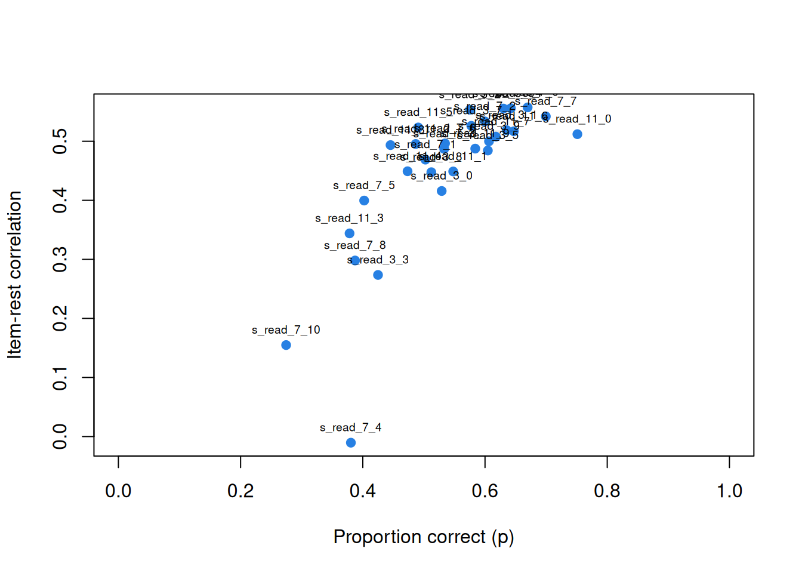
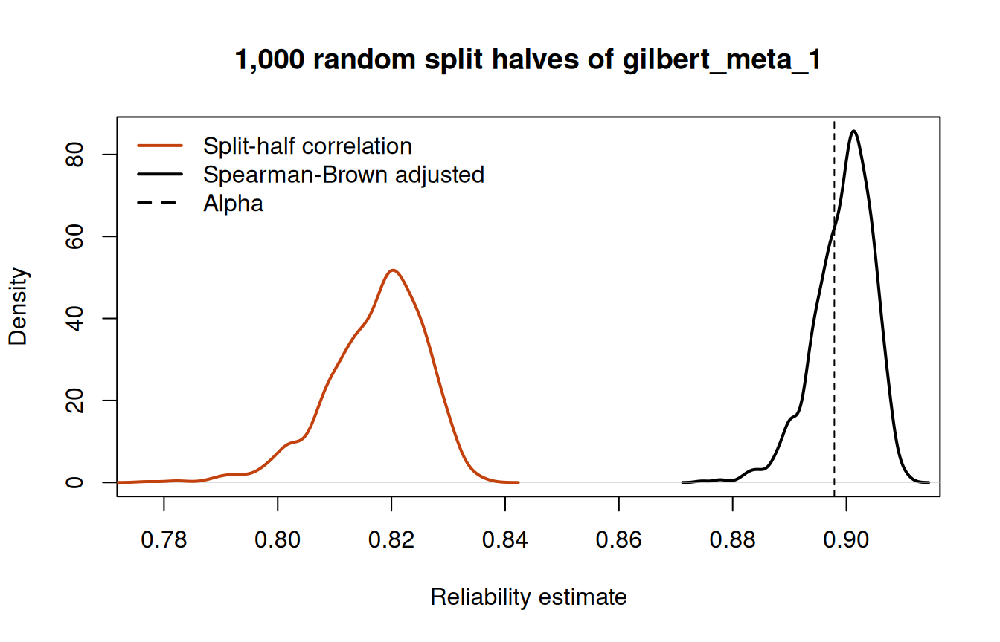

Classical test theory and reliability
What this is for
Every score contains error. A student who scores 27 on a test today might score 25 or 29 tomorrow for reasons that have nothing to do with what the test is meant to measure: a lucky guess, a misread question, a bad night’s sleep. Constructs and construct maps asked what a scale is meant to measure; this lesson asks how precisely it does so. Classical test theory (CTT) is the oldest and still the most widely used framework for thinking about that error. It is a theory of test scores, not of item responses: nothing in this lesson refers to the probability of answering any one item correctly. That is both its main convenience and its central limitation. The payoff is reliability, a single number that says how much of the variation in scores is signal.
Reliability estimates are everywhere. That doesn’t mean they are always meaningful, and part of this lesson is about when they are not.
Goals
By the end of this lesson you should be able to:
- write down the classical model and define reliability in terms of it;
- explain why the correlation between two parallel forms estimates reliability;
- compute Cronbach’s alpha, and say why it is a lower bound on reliability (and when it is exact);
- use split halves and the Spearman–Brown formula;
- run a classical item analysis and use it to spot items that don’t belong, including items that need to be reverse-keyed.
Core ideas
True scores and error
CTT grew out of Spearman’s attempt to correct correlations for the error in the measures being correlated (Spearman, 1904), and its standard statement is Lord and Novick’s (1968). The foundational idea is that a respondent’s observed score \(X\) is the sum of a true score \(T\) and an error \(E\): \[X = T + E.\] The true score is defined as the average score the respondent would get over (hypothetical) endless independent replications of the test; the error is whatever is left. From that definition, errors have mean zero and are uncorrelated with true scores, so the variance splits cleanly: \[\sigma^2_X = \sigma^2_T + \sigma^2_E.\] Reliability is the share of observed-score variance that is true-score variance: \[\rho_{XX'} = \frac{\sigma^2_T}{\sigma^2_X} = \frac{\sigma^2_T}{\sigma^2_T + \sigma^2_E}.\] It is also the squared correlation between observed and true scores (Lord & Novick, 1968). The trouble, of course, is that we never observe \(T\), so this definition cannot be computed from data. The rest of CTT is a set of tricks for getting around that.
The first trick: parallel forms
Suppose we have two forms of a test, \(X\) and \(X'\), that measure the same true score with the same error variance and independent errors. What can we say about the correlation between them? A little algebra (problem 1 asks you to do it) shows that \[\text{cor}(X, X') = \frac{\sigma^2_T}{\sigma^2_X} = \rho_{XX'}.\] The correlation between two observable things equals a quantity defined in terms of an unobservable one. Here is that fact in action.
Try it: parallel forms
The two numbers at the top track each other as the slider moves, up to sampling error in 400 simulated respondents. The standard error of measurement in the last line is what reliability means for an individual. Reliability is a property of scores in a population; the standard error of measurement, \(\sigma_E = \sigma_X\sqrt{1 - \rho_{XX'}}\), is the typical distance between one respondent’s observed and true scores. A reliability of 0.8, between the two real scales below (0.70 and 0.90), still leaves each score with an error SD of \(\sqrt{1 - 0.8} \approx 0.45\) times the SD of the scores, nearly half their spread. Note, too, that CTT gives one standard error of measurement for everyone, whatever their score. We will see in Information, precision, and short forms that item response models let it vary.
Alpha: reliability from one administration
Parallel forms are expensive, and test-retest designs have their own problems (respondents remember items, and they change between occasions). The appeal of Cronbach’s alpha (Cronbach, 1951) is that it gives a reliability estimate from a single administration, by treating the items themselves as a set of little parallel tests. For a test of \(k\) items with item variances \(\sigma^2_i\) and total-score variance \(\sigma^2_X\), \[\alpha = \frac{k}{k-1}\left(1 - \frac{\sum_i \sigma^2_i}{\sigma^2_X}\right).\] When items are scored 0/1, this is the same thing as the Kuder–Richardson formula 20, KR-20 (Kuder & Richardson, 1937); Guttman’s \(\lambda_3\) is alpha under another name (Guttman, 1945). The intuition: if items hang together, the total-score variance is much larger than the sum of the item variances, because the covariances between items add in; if they don’t, the two are similar and alpha is small.
Alpha rests on an assumption, though. Which one? Alpha equals reliability when every item measures the true score equally well (the items are “tau-equivalent”). When some items are better measures than others, which is to say nearly always, alpha is smaller than reliability (Novick & Lewis, 1967).
Try it: when does alpha equal reliability?
Six items, each an equally noisy measure of the same true score, but with loadings on it that you can pull apart.
With the error SD at 1, the gap stays under 0.01 until “How unequal” passes about 0.5, where the loadings already run from 0.8 to 1.2. Against a reliability near 0.86, that is small, which is part of why alpha has survived. Push the loadings much further apart (at the far right one of them turns negative, an item pointing the wrong way) and the gap grows. But it only ever goes one way.
Split halves and the Spearman–Brown formula
An older route to a single-administration estimate is to split the test into two halves, score each, and correlate them. The halves are only half as long as the test, though, and shorter tests are less reliable. The Spearman–Brown formula (Spearman, 1910; Brown, 1910) says how reliability changes when a test is lengthened (or shortened) by a factor \(m\) with comparable items: \[\rho_{m} = \frac{m\,\rho}{1 + (m-1)\rho}.\] Setting \(m = 2\) steps a half-test correlation up to full-test reliability. The same formula answers design questions: how long does a test need to be?
Try it: lengthening a test
Which split should you use? There are a great many ways to split a test in half, and they give different answers. Cronbach (1951) showed that alpha is the average split-half coefficient over all possible splits (for the Spearman–Brown version, strictly, when the halves have equal variances). We check this with real data below.
Item analysis, and reading your items
CTT also offers the simplest tools for looking at individual items. For each item we compute:
- its mean (for 0/1 items, the proportion correct, often called the item’s p-value), a first indication of difficulty, where larger values mean easier items;
- its item-rest correlation: the correlation between the item and the sum of the other items. This tells us whether the item is hanging together with the rest. An item with a correlation near zero, or negative, is either measuring something else or is keyed backwards.
That last point is subtler than it sounds. CTT assumes every item is coded so that a higher response means more of the construct. Many scales deliberately include items worded in the opposite direction, and those have to be reverse-keyed before any of this makes sense. How do we know which ones? We will see below that the data take us most of the way but not all of it, and that the last step is to read the items.
Simulate
Here is the lower-bound result from the proof above, on simulated data where we know the true scores. The code generates a six-item test from the classical model, then compares the true reliability, \(\text{cor}(X, T)^2\), with alpha. It is base R only, so it starts quickly.
Run it as is: with equal loadings the two numbers agree up to sampling error (0.865 and 0.86 with the seed as written). Then swap in the line of unequal loadings and run it again. True reliability rises a little, to 0.879, because the steeper items carry more signal, while alpha falls to 0.829: the gap opens, and in the direction the proof says. Change np to 100000 and the sampling noise goes away but the gap doesn’t.
With real data
We use two tables. The main example is gilbert_meta_1, the reading-comprehension outcome of a school-randomized trial of a literacy intervention for third graders (Gilbert, Kim & Miratrix, 2023; data at https://doi.org/10.7910/DVN/QARRYT): 30 items scored 0/1, where 1 is a correct answer. The contrast, for reverse keying, is the Mach IV, a 20-item attitude scale measuring Machiavellianism (Christie & Geis, 1970), in responses collected by Hunter, Gerbing and Boster (1982) and distributed with the lessR R package (Gerbing, 2026; IRW table lessR_Mach4). All code is base R; download it.
Code
# IRW tables are long (one row per response); reshape to one row per person.
long2wide <- function(df) {
wide <- tapply(df$resp, list(df$id, df$item), function(x) x[1])
as.data.frame(wide[, order(colnames(wide))])
}
# Cronbach's alpha (KR-20 when items are 0/1).
alpha <- function(resp) {
resp <- resp[complete.cases(resp), ]
k <- ncol(resp)
(k / (k - 1)) * (1 - sum(apply(resp, 2, var)) / var(rowSums(resp)))
}
# Correlation of each item with the sum of the *other* items.
item_rest <- function(resp) {
tot <- rowSums(resp)
sapply(names(resp), function(i) cor(resp[[i]], tot - resp[[i]], use = "complete.obs"))
}Code
url <- "https://redivis.com/api/v1/tables/datapages.item_response_warehouse:v57_0.gilbert_meta_1/rows?format=csv"
df <- read.csv(url)
# Treatment was assigned by school: each school (cluster_id) has one value of treat.
c(students = length(unique(df$id)), schools = length(unique(df$cluster_id)),
schools_with_one_arm = sum(tapply(df$treat, df$cluster_id, function(x) length(unique(x))) == 1)) students schools schools_with_one_arm
7797 110 110 Code
resp <- long2wide(df)
resp <- resp[complete.cases(resp), ] # keep students who answered all 30 items
dim(resp)[1] 7322 30The 7,797 students come from 110 schools, and each school is entirely in one arm of the trial. We keep the 7,322 students who answered every item; the rest have at least one missing response.
Item analysis
Code
ia <- data.frame(p = colMeans(resp), r_rest = item_rest(resp))
round(ia[order(ia$r_rest), ], 2)[1:6, ] # the six weakest items| p | r_rest | |
|---|---|---|
| s_read_7_4 | 0.38 | -0.01 |
| s_read_7_10 | 0.27 | 0.15 |
| s_read_3_3 | 0.42 | 0.27 |
| s_read_7_8 | 0.39 | 0.30 |
| s_read_11_3 | 0.38 | 0.34 |
| s_read_7_5 | 0.40 | 0.40 |
Code
round(quantile(ia$r_rest, c(0.1, 0.5, 0.9)), 2) # the spread across all 30 10% 50% 90%
0.30 0.49 0.55 Code
sum(ia$r_rest >= 0.4) # items at 0.40 or above[1] 24Code
plot(ia$p, ia$r_rest, pch = 19, col = "#2780e3", xlim = c(0, 1),
xlab = "Proportion correct (p)", ylab = "Item-rest correlation")
text(ia$p, ia$r_rest, rownames(ia), pos = 3, cex = 0.6)
What does a typical item look like here? The median item-rest correlation is 0.49, and 24 of the 30 items are at 0.40 or above. One is not: s_read_7_4 has an item-rest correlation of −0.01, essentially zero, although its proportion correct, 0.38, sits among the others in the plot. Whatever that item measures, the total score doesn’t share it. Since this test is the outcome in a randomized trial, that merits comment: an item that doesn’t covary with the rest adds noise to the total and so to the treatment-effect estimate. Problem 3 asks what alpha does without it.
Alpha, and all the split halves
Code
sprintf("%.3f", alpha(resp))[1] "0.898"Code
set.seed(252)
split_half <- function(resp) {
k <- ncol(resp)
h <- sample(k, k / 2)
r <- cor(rowSums(resp[, h]), rowSums(resp[, -h]))
c(raw = r, spearman_brown = 2 * r / (1 + r))
}
halves <- t(replicate(1000, split_half(resp)))
plot(density(halves[, "spearman_brown"]), lwd = 2, xlim = range(halves),
main = "1,000 random split halves of gilbert_meta_1", xlab = "Reliability estimate")
lines(density(halves[, "raw"]), col = "#c2410c", lwd = 2)
abline(v = alpha(resp), lty = 2)
legend("topleft", c("Split-half correlation", "Spearman-Brown adjusted", "Alpha"),
col = c("#c2410c", "black", "black"), lty = c(1, 1, 2), lwd = 2, bty = "n")
Code
print(c(mean_adjusted = mean(halves[, "spearman_brown"]), alpha = alpha(resp),
lowest = min(halves[, "spearman_brown"]), highest = max(halves[, "spearman_brown"]),
share_below_alpha = mean(halves[, "spearman_brown"] < alpha(resp))), digits = 3) mean_adjusted alpha lowest highest share_below_alpha
0.899 0.898 0.875 0.911 0.330 The left-hand curve is the raw correlation between the two halves of each random split; the right-hand one steps each correlation up with Spearman–Brown. The adjusted estimates run from 0.875 to 0.911, and a third of them fall below alpha. But they average 0.899, against an alpha of 0.898 (the dashed line), as Cronbach’s result says; the last digit is the price of 1,000 random splits rather than all of them, and of halves whose variances aren’t quite equal. Any single split could have given a number a little above or below alpha.
Reverse keying: the Mach IV
The Mach IV is answered on a six-point scale, from 0 (strongly disagree) to 5 (strongly agree). Half its items are worded so that agreeing is the Machiavellian answer; for the other half, agreeing is the less Machiavellian answer. The IRW table stores the responses as given, unkeyed.
Code
mach <- long2wide(read.csv(
"https://redivis.com/api/v1/tables/datapages.item_response_warehouse:v57_0.lessR_Mach4/rows?format=csv"))
dim(mach) # 351 respondents, 20 items, responses 0 (strongly disagree) to 5 (strongly agree)[1] 351 20Code
sprintf("%.2f", alpha(mach))[1] "0.37"Code
round(item_rest(mach), 2) m01 m02 m03 m04 m05 m06 m07 m08 m09 m10 m11 m12 m13 m14 m15
0.14 0.07 0.29 0.05 0.08 0.22 0.23 0.06 0.09 0.13 0.11 -0.02 0.10 0.25 0.06
m16 m17 m18 m19 m20
0.15 -0.02 0.05 0.03 -0.01 Code
sum(item_rest(mach) > 0) # how many are positive[1] 17An alpha of 0.37 is well below the 0.90 of the reading test. Now look at the item-rest correlations. They are small (none above 0.29, against a median of 0.49 in the reading test), and 17 of the 20 are positive, including m04 (“Most people are basically good and kind”), which points the opposite way from m01 (“Never tell anyone the real reason you did something unless it is useful to do so”; both items from Christie & Geis, 1970). Item-rest correlations can’t tell us which items are reversed, because the total we correlate against is itself a mix of the two directions. The published key reverses ten of them:
Code
# The published key (Christie & Geis, 1970): these ten items are worded so that
# agreeing is the *less* Machiavellian answer, so we reverse them.
reversed <- sprintf("m%02d", c(3, 4, 6, 7, 9, 10, 11, 14, 16, 17))
mach_keyed <- mach
mach_keyed[reversed] <- 5 - mach_keyed[reversed]
sprintf("%.2f", alpha(mach_keyed))[1] "0.70"Code
round(sort(item_rest(mach_keyed)), 2) m19 m03 m14 m15 m08 m02 m17 m05 m18 m04 m20 m13 m16 m01 m11
-0.05 0.12 0.19 0.23 0.23 0.23 0.23 0.25 0.27 0.28 0.28 0.28 0.29 0.30 0.36
m12 m09 m10 m06 m07
0.37 0.39 0.41 0.43 0.46 Alpha nearly doubles, to 0.70, and the item-rest correlations now look like a scale: all but one are between 0.12 and 0.46. The one that isn’t is m19, an item about euthanasia, at −0.05.
Could the data have found the key on their own? Automated keying, such as check.keys = TRUE in the psych package’s alpha() (Revelle, 2026), splits the items by the sign of their loading on the first principal component. Here is that split in base R:
Code
# Can the data find the key? Automated keying (e.g. psych::alpha(check.keys = TRUE))
# splits the items by the sign of their loading on the first principal component.
pc1 <- prcomp(mach)$rotation[, 1]
auto <- names(pc1)[sign(pc1) != sign(pc1["m01"])] # items pointing away from m01
auto [1] "m03" "m04" "m06" "m07" "m09" "m10" "m11" "m14" "m16" "m17" "m19"Code
setdiff(auto, reversed) # flipped by the data but not by the published key[1] "m19"Code
setdiff(reversed, auto) # flipped by the published key but not by the datacharacter(0)Code
# m19 is weak whichever way it is keyed.
mach_alt <- mach_keyed
mach_alt$m19 <- 5 - mach_alt$m19
round(c(m19_as_published = item_rest(mach_keyed)[["m19"]],
m19_reversed = item_rest(mach_alt)[["m19"]],
alpha_m19_reversed = alpha(mach_alt)), 2) m19_as_published m19_reversed alpha_m19_reversed
-0.05 0.05 0.71 It recovers all ten published reversals, and adds m19. That is the one item the data can’t settle: its item-rest correlation is −0.05 keyed one way and 0.05 keyed the other, and the documentation that comes with the lessR data also lists it among the reversed items. Either way, it doesn’t covary with the rest of the scale. It is a reasonable question to ask respondents, but it is about something other than the other 19. I use automated keying as a prompt to read the items, not as a substitute for reading them: it got 19 of 20 items right here, and the 20th is exactly the one where a reader, not the data, has to decide.
Limitations worth remembering
Many of these were known to Cronbach himself. Alpha is a lower bound only under uncorrelated errors, and there are better lower bounds, such as the greatest lower bound or “glb” (Jackson & Agunwamba, 1977; Ten Berge & Sočan, 2004), and model-based alternatives such as McDonald’s omega (McDonald, 1999), which we meet in Factor analysis II. Alpha is not a measure of unidimensionality (Green, Lissitz & Mulaik, 1977). And reliability is a property of scores in a population: estimate it in a sample that is a poor proxy for the people you care about and the number may not mean much. For a clear example of that last point, see the IRW vignette on the reliability paradox in cognitive-control tasks, where tasks that produce robust experimental effects yield unreliable individual differences (Hedge, Powell & Sumner, 2018).
Finally, the limitation that motivates the rest of the course: CTT says nothing about individual item responses. It treats a test as a single score with a single error variance, the same for everyone. That is the assumption item response theory drops; Where CTT breaks shows what it costs.
Problems
- Parallel forms. Suppose \(X = T + E\) and \(X' = T + E'\), where \(E\) and \(E'\) are uncorrelated with each other and with \(T\), and have equal variances. Show that \(\text{cor}(X, X') = \sigma^2_T/\sigma^2_X\). Where exactly did you use each assumption?
- Attenuation. Let \(Y\) be a criterion (a gold-standard measure, say) with its own reliability \(\rho_{YY'}\). Show that \(\text{cor}(X, Y) = \text{cor}(T_X, T_Y)\sqrt{\rho_{XX'}\,\rho_{YY'}}\) (Spearman, 1904), and hence that a test’s correlation with anything is bounded by \(\sqrt{\rho_{XX'}}\). What does this imply for a new test whose validity is judged by its correlation with an established one? Loevinger (1954) describes the “attenuation paradox” this creates for test construction; read it after you’ve tried the problem.
- The weak item. In
gilbert_meta_1, drops_read_7_4and recompute alpha. By how much does it change? Now use Spearman–Brown to predict the reliability of a 29-item test from the 30-item alpha. Why do the two answers differ, and in which direction? - Split halves. In the split-half figure, about a third of the adjusted split-half estimates fall below alpha. Why is alpha not below all of them, given that alpha is a lower bound on reliability? (Hint: what is each split-half estimate a bound on, and what does it assume?) Challenge (open): is there anything about the splits that fall below alpha that suggests they are “bad” splits, halves that are not parallel?
- Reading items. Look at the item-rest correlations for the keyed Mach IV. Choose the two weakest items and, from their content and the construct, argue whether each should be dropped, rewritten, or kept. For m19, does it matter which way it is keyed? Would your decisions change if the scale were used to screen job applicants rather than in research? Read Hunter, Gerbing and Boster (1982) alongside this problem.
- Alpha at scale. Using the
alpha()function from this lesson, compute alpha for five IRW tables of your choosing with 0/1 responses. Before you do, predict which will be highest. What features of a table (number of items, type of construct, sample) seem to go with high alpha? What would make you distrust a high value?
Going further
- Lord, F. M., & Novick, M. R. (1968). Statistical theories of mental test scores. Addison-Wesley. The canonical treatment of the classical model, true scores and parallel measurements.
- Cronbach, L. J. (1951). Coefficient alpha and the internal structure of tests. Psychometrika, 16(3), 297–334. https://doi.org/10.1007/BF02310555. Where alpha gets its name, and the split-half result.
- Novick, M. R., & Lewis, C. (1967). Coefficient alpha and the reliability of composite measurements. Psychometrika, 32(1), 1–13. https://doi.org/10.1007/BF02289400. The lower-bound proof and the conditions for equality.
- Sijtsma, K. (2009). On the use, the misuse, and the very limited usefulness of Cronbach’s alpha. Psychometrika, 74(1), 107–120. https://doi.org/10.1007/s11336-008-9101-0. A critique, with the glb as an alternative.
- Revelle, W., & Zinbarg, R. E. (2009). Coefficients alpha, beta, omega, and the glb: Comments on Sijtsma. Psychometrika, 74(1), 145–154. https://doi.org/10.1007/s11336-008-9102-z. The reply, which argues for omega.
- McNeish, D. (2018). Thanks coefficient alpha, we’ll take it from here. Psychological Methods, 23(3), 412–433. https://doi.org/10.1037/met0000144. A readable survey of the alternatives.
- Green, S. B., & Hershberger, S. L. (2000). Correlated errors in true score models and their effect on coefficient alpha. Structural Equation Modeling, 7(2), 251–270. https://doi.org/10.1207/S15328007SEM0702_6. When alpha overstates reliability.
- Hunter, J. E., Gerbing, D. W., & Boster, F. J. (1982). Machiavellian beliefs and personality: Construct invalidity of the Machiavellianism dimension. Journal of Personality and Social Psychology, 43(6), 1293–1305. https://doi.org/10.1037/0022-3514.43.6.1293. The source of the Mach IV responses, and a study of what the scale measures.
- IRW vignette: the reliability paradox. Reliability of experimental tasks across IRW tables.
Data sources
Data from the Item Response Warehouse (each table name links to its IRW page); references from IRW biblio.
gilbert_meta_1: Gilbert, J. B., Kim, J. S., & Miratrix, L. W. (2023). Modeling item-level heterogeneous treatment effects with the explanatory item response model: Leveraging large-scale online assessments to pinpoint the impact of educational interventions. Journal of Educational and Behavioral Statistics, 48(6), 889-913. Gilbert, Josh, 2023, “Replication Data for: Modeling Item-Level Heterogeneous Treatment Effects With the Explanatory Item Response Model: Leveraging Large-Scale Online Assessments to Pinpoint the Impact of Educational Interventions”, https://doi.org/10.7910/DVN/QARRYT, Harvard Dataverse, V2, UNF:6:r+hUHhEPWWtUbcqXyELTJw== [fileUNF]. Licence: CC BY-NC-SA 4.0.lessR_Mach4: Hunter, J. E., Gerbing, D. W., & Boster, F. J. (1982). Machiavellian beliefs and personality: Construct invalidity of the Machiavellianism dimension. Journal of personality and social psychology, 43(6), 1293. https://doi.org/10.1037/0022-3514.43.6.1293. Licence: GPL-3.0.
For instructors
- Source: EDUC 252 class 2 (slides c2, “Classical Test Theory” through “Limitations of alpha”) and problem set 2 (#1–3); code in
ben-domingue/252:c2/alpha.R,ps2/itemanalysis.R,ps2/parallel_tests.R. - Timing: the core ideas and widgets take about 50 minutes; the two real-data analyses work as a 25-minute lab.
- Held back: constructs and construct maps (the first half of c2) are their own lesson; the “CTT failures” demonstration (PS2#4) and “towards IRT” (PS2#5) are in Where CTT breaks.
- Changed from 252: PS2#1 contrasted
gilbert_meta_1withgilbert_meta_9; this lesson uses the Mach IV instead, becausegilbert_meta_9has repeated waves that complicate a first item analysis, and because the Mach IV carries the reverse-keying lesson. - Deep dive: problem 6 is the small version of deep dive #20 (alpha across the IRW corpus, and alpha against test length), planned for this lesson. The Across the IRW section is added when that result is computed.
- Item text: the Mach IV is not openly licensed (Christie & Geis, 1970, Academic Press), so the lesson quotes two items, m01 and m04, for the keying argument and describes the rest.
- Solutions: held back in
solutions/ctt-reliability.qmd(not published). Problem 4’s challenge is open (in 252 it was posed as an open question).